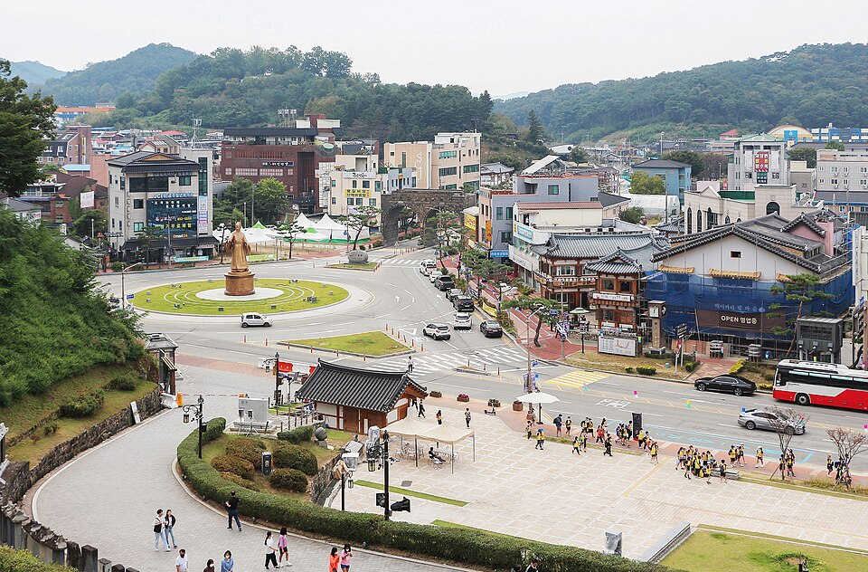

지역·학습팁
공주 검정고시 — 남은 기간이 짧을 때 짜는 합격 계획

“이번 시험까지 시간이 얼마 안 남았는데 지금 시작해도 될까요?” 공주 검정고시 과외 상담에서 가장 자주 듣는 질문이에요. 결론부터 말씀드리면, 남은 기간이 짧을수록 많이 하는 것보다 순서를 정하는 것이 중요합니다. 시간이 적을 때 쓰는 계획은 평소 계획과 아예 달라야 해요.
1. 시험일에서 거꾸로 계산한다
단기 준비의 시작은 “오늘부터 무엇을 할까”가 아니라 “시험 전날까지 무엇이 끝나 있어야 하나”입니다. 뒤에서부터 칸을 채우면 지금 버려야 할 것이 자연스럽게 보여요.
- 마지막 2주는 새 내용을 넣지 않고 기출·복습 전용으로 비워 둡니다.
- 그 앞 기간에 과목별로 꼭 볼 단원만 배치합니다. 전 범위를 다 보려다 아무것도 못 끝내는 경우가 가장 흔해요.
- 계획은 주 단위로 짜되, 하루는 예비일로 비워 둡니다. 밀리는 날은 반드시 생깁니다.
2. 과목 합격제를 지렛대로 쓴다
검정고시에는 과목 합격제가 있어요. 한 번에 전 과목을 끝내지 못해도, 60점 이상 받은 과목은 다음 시험에서 다시 보지 않아도 됩니다. 시간이 정말 부족하다면 이번 회차에 확실히 잡을 과목과 다음 회차로 넘길 과목을 나누는 게 현실적이에요. 이렇게 나누면 한 과목에 쓸 수 있는 시간이 늘어나 오히려 합격이 빨라지는 경우가 많습니다.
3. 하루를 세 덩어리로 쪼갠다
단기 준비에서 “하루 8시간 공부”는 대개 지켜지지 않아요. 대신 아침·낮·저녁 세 덩어리로 나누고, 덩어리마다 할 일을 하나씩만 정합니다.
- 머리가 맑은 시간에는 새로 배우는 과목(보통 수학·영어)을 둡니다.
- 피곤한 시간에는 암기·복습처럼 손이 기억하는 일을 둡니다.
- 자기 전 10분은 그날 본 것을 소리 내어 요약합니다. 이 10분이 다음 날 복습 시간을 줄여 줘요.
검정고시 합격 기준은 전 과목 평균 60점이에요. 90점을 목표로 잡으면 시간이 모자라지만, 60점을 목표로 잡으면 남은 기간이 짧아도 계획이 세워집니다. 먼저 합격하고, 점수는 필요할 때 올리면 됩니다.
공주에서 단기간에 준비하는 분, 이렇게 돕습니다
공주 검정고시를 짧은 기간에 준비할 때 학원 커리큘럼은 이미 진도가 정해져 있어 내 남은 시간에 맞추기 어렵습니다. 1:1 과외는 남은 기간을 먼저 재고 거기에 맞춰 볼 단원을 잘라냅니다. 지금 수준을 확인해 어떤 과목을 이번 회차에 잡을지 같이 정하고, 주마다 계획을 다시 조정해요. 공주 어디서든 방문·화상(줌) 수업이 가능합니다. 시험 일정은 뉴스 첫 화면의 일정 안내를 확인해 주세요.
남은 기간과 지금 상태만 알려 주세요. 무료 상담에서 공주 검정고시 기준으로 이번에 잡을 과목과 하루 분량을 계산해, 그대로 따라가면 되는 계획표로 정리해 드립니다.